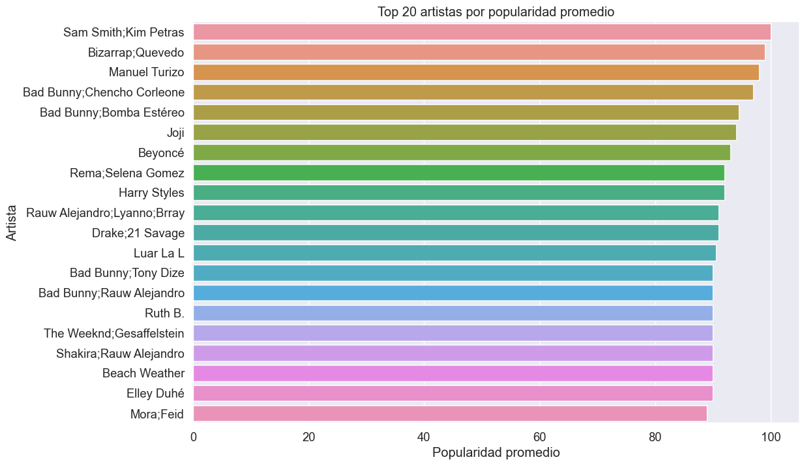
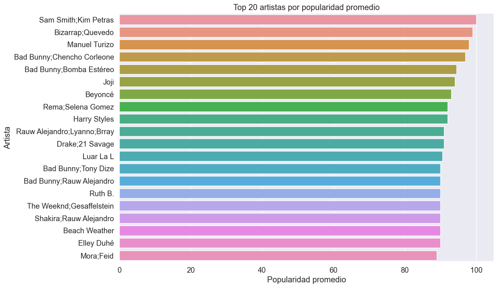

Analisis Exploratorio#
import pandas as pd
import numpy as np
import matplotlib.pyplot as plt
import seaborn as sns
plt.style.use('ggplot')
%matplotlib inline
sns.set_palette("pastel")
df = pd.read_csv('dataset.csv')
print(df.head())
print("\nInformación del dataset:")
print(df.info())
print("\nEstadísticas descriptivas:")
print(df.describe())
Unnamed: 0 track_id artists \
0 0 5SuOikwiRyPMVoIQDJUgSV Gen Hoshino
1 1 4qPNDBW1i3p13qLCt0Ki3A Ben Woodward
2 2 1iJBSr7s7jYXzM8EGcbK5b Ingrid Michaelson;ZAYN
3 3 6lfxq3CG4xtTiEg7opyCyx Kina Grannis
4 4 5vjLSffimiIP26QG5WcN2K Chord Overstreet
album_name \
0 Comedy
1 Ghost (Acoustic)
2 To Begin Again
3 Crazy Rich Asians (Original Motion Picture Sou...
4 Hold On
track_name popularity duration_ms explicit \
0 Comedy 73 230666 False
1 Ghost - Acoustic 55 149610 False
2 To Begin Again 57 210826 False
3 Can't Help Falling In Love 71 201933 False
4 Hold On 82 198853 False
danceability energy ... loudness mode speechiness acousticness \
0 0.676 0.4610 ... -6.746 0 0.1430 0.0322
1 0.420 0.1660 ... -17.235 1 0.0763 0.9240
2 0.438 0.3590 ... -9.734 1 0.0557 0.2100
3 0.266 0.0596 ... -18.515 1 0.0363 0.9050
4 0.618 0.4430 ... -9.681 1 0.0526 0.4690
instrumentalness liveness valence tempo time_signature track_genre
0 0.000001 0.3580 0.715 87.917 4 acoustic
1 0.000006 0.1010 0.267 77.489 4 acoustic
2 0.000000 0.1170 0.120 76.332 4 acoustic
3 0.000071 0.1320 0.143 181.740 3 acoustic
4 0.000000 0.0829 0.167 119.949 4 acoustic
[5 rows x 21 columns]
Información del dataset:
<class 'pandas.core.frame.DataFrame'>
RangeIndex: 114000 entries, 0 to 113999
Data columns (total 21 columns):
# Column Non-Null Count Dtype
--- ------ -------------- -----
0 Unnamed: 0 114000 non-null int64
1 track_id 114000 non-null object
2 artists 113999 non-null object
3 album_name 113999 non-null object
4 track_name 113999 non-null object
5 popularity 114000 non-null int64
6 duration_ms 114000 non-null int64
7 explicit 114000 non-null bool
8 danceability 114000 non-null float64
9 energy 114000 non-null float64
10 key 114000 non-null int64
11 loudness 114000 non-null float64
12 mode 114000 non-null int64
13 speechiness 114000 non-null float64
14 acousticness 114000 non-null float64
15 instrumentalness 114000 non-null float64
16 liveness 114000 non-null float64
17 valence 114000 non-null float64
18 tempo 114000 non-null float64
19 time_signature 114000 non-null int64
20 track_genre 114000 non-null object
dtypes: bool(1), float64(9), int64(6), object(5)
memory usage: 17.5+ MB
None
Estadísticas descriptivas:
Unnamed: 0 popularity duration_ms danceability \
count 114000.000000 114000.000000 1.140000e+05 114000.000000
mean 56999.500000 33.238535 2.280292e+05 0.566800
std 32909.109681 22.305078 1.072977e+05 0.173542
min 0.000000 0.000000 0.000000e+00 0.000000
25% 28499.750000 17.000000 1.740660e+05 0.456000
50% 56999.500000 35.000000 2.129060e+05 0.580000
75% 85499.250000 50.000000 2.615060e+05 0.695000
max 113999.000000 100.000000 5.237295e+06 0.985000
energy key loudness mode \
count 114000.000000 114000.000000 114000.000000 114000.000000
mean 0.641383 5.309140 -8.258960 0.637553
std 0.251529 3.559987 5.029337 0.480709
min 0.000000 0.000000 -49.531000 0.000000
25% 0.472000 2.000000 -10.013000 0.000000
50% 0.685000 5.000000 -7.004000 1.000000
75% 0.854000 8.000000 -5.003000 1.000000
max 1.000000 11.000000 4.532000 1.000000
speechiness acousticness instrumentalness liveness \
count 114000.000000 114000.000000 114000.000000 114000.000000
mean 0.084652 0.314910 0.156050 0.213553
std 0.105732 0.332523 0.309555 0.190378
min 0.000000 0.000000 0.000000 0.000000
25% 0.035900 0.016900 0.000000 0.098000
50% 0.048900 0.169000 0.000042 0.132000
75% 0.084500 0.598000 0.049000 0.273000
max 0.965000 0.996000 1.000000 1.000000
valence tempo time_signature
count 114000.000000 114000.000000 114000.000000
mean 0.474068 122.147837 3.904035
std 0.259261 29.978197 0.432621
min 0.000000 0.000000 0.000000
25% 0.260000 99.218750 4.000000
50% 0.464000 122.017000 4.000000
75% 0.683000 140.071000 4.000000
max 0.995000 243.372000 5.000000
# Verificamos nulos
print("\nValores nulos por columna:")
print(df.isnull().sum())
# Eliminar columna innecesaria si existe
if 'Unnamed: 0' in df.columns:
df.drop('Unnamed: 0', axis=1, inplace=True)
# Verificamos duplicados
print("\nNúmero de duplicados:", df.duplicated().sum())
# Eliminar duplicados si los hay
df = df.drop_duplicates()
# Verificar valores únicos en las columnas categóricas
print("\nValores únicos en track_genre:", df['track_genre'].nunique())
print(df['track_genre'].value_counts().head(10))
Valores nulos por columna:
Unnamed: 0 0
track_id 0
artists 1
album_name 1
track_name 1
popularity 0
duration_ms 0
explicit 0
danceability 0
energy 0
key 0
loudness 0
mode 0
speechiness 0
acousticness 0
instrumentalness 0
liveness 0
valence 0
tempo 0
time_signature 0
track_genre 0
dtype: int64
Número de duplicados: 450
Valores únicos en track_genre: 114
track_genre
acoustic 1000
emo 1000
rock-n-roll 1000
reggaeton 1000
disco 1000
r-n-b 1000
punk-rock 1000
pagode 1000
electronic 1000
mpb 1000
Name: count, dtype: int64
#Tratamiento de nulos
for col in ['artists', 'album_name', 'track_name']:
df[col] = df[col].fillna(f"Missing_{col}")
print(df.isnull().sum())
track_id 0
artists 0
album_name 0
track_name 0
popularity 0
duration_ms 0
explicit 0
danceability 0
energy 0
key 0
loudness 0
mode 0
speechiness 0
acousticness 0
instrumentalness 0
liveness 0
valence 0
tempo 0
time_signature 0
track_genre 0
dtype: int64
track_id 0
artists 0
album_name 0
track_name 0
popularity 0
duration_ms 0
explicit 0
danceability 0
energy 0
key 0
loudness 0
mode 0
speechiness 0
acousticness 0
instrumentalness 0
liveness 0
valence 0
tempo 0
time_signature 0
track_genre 0
dtype: int64
track_id 0
artists 0
album_name 0
track_name 0
popularity 0
duration_ms 0
explicit 0
danceability 0
energy 0
key 0
loudness 0
mode 0
speechiness 0
acousticness 0
instrumentalness 0
liveness 0
valence 0
tempo 0
time_signature 0
track_genre 0
dtype: int64
# Distribución de todas las variables
def plot_distributions(df, columns):
plt.figure(figsize=(15, 20))
for i, col in enumerate(columns):
plt.subplot(5, 4, i+1)
sns.histplot(df[col], kde=True)
plt.title(f'Distribución de {col}')
plt.tight_layout()
plt.show()
numeric_cols = df.select_dtypes(include=['int64', 'float64']).columns
plot_distributions(df, numeric_cols)
c:\Users\Administrador\miniconda3\envs\ml_venv\lib\site-packages\seaborn\_oldcore.py:1119: FutureWarning: use_inf_as_na option is deprecated and will be removed in a future version. Convert inf values to NaN before operating instead.
with pd.option_context('mode.use_inf_as_na', True):
c:\Users\Administrador\miniconda3\envs\ml_venv\lib\site-packages\seaborn\_oldcore.py:1119: FutureWarning: use_inf_as_na option is deprecated and will be removed in a future version. Convert inf values to NaN before operating instead.
with pd.option_context('mode.use_inf_as_na', True):
C:\Users\Administrador\AppData\Local\Temp\ipykernel_20408\3588578557.py:8: UserWarning: The figure layout has changed to tight
plt.tight_layout()
c:\Users\Administrador\miniconda3\envs\ml_venv\lib\site-packages\seaborn\_oldcore.py:1119: FutureWarning: use_inf_as_na option is deprecated and will be removed in a future version. Convert inf values to NaN before operating instead.
with pd.option_context('mode.use_inf_as_na', True):
C:\Users\Administrador\AppData\Local\Temp\ipykernel_20408\3588578557.py:8: UserWarning: The figure layout has changed to tight
plt.tight_layout()
c:\Users\Administrador\miniconda3\envs\ml_venv\lib\site-packages\seaborn\_oldcore.py:1119: FutureWarning: use_inf_as_na option is deprecated and will be removed in a future version. Convert inf values to NaN before operating instead.
with pd.option_context('mode.use_inf_as_na', True):
C:\Users\Administrador\AppData\Local\Temp\ipykernel_20408\3588578557.py:8: UserWarning: The figure layout has changed to tight
plt.tight_layout()
c:\Users\Administrador\miniconda3\envs\ml_venv\lib\site-packages\seaborn\_oldcore.py:1119: FutureWarning: use_inf_as_na option is deprecated and will be removed in a future version. Convert inf values to NaN before operating instead.
with pd.option_context('mode.use_inf_as_na', True):
C:\Users\Administrador\AppData\Local\Temp\ipykernel_20408\3588578557.py:8: UserWarning: The figure layout has changed to tight
plt.tight_layout()
c:\Users\Administrador\miniconda3\envs\ml_venv\lib\site-packages\seaborn\_oldcore.py:1119: FutureWarning: use_inf_as_na option is deprecated and will be removed in a future version. Convert inf values to NaN before operating instead.
with pd.option_context('mode.use_inf_as_na', True):
C:\Users\Administrador\AppData\Local\Temp\ipykernel_20408\3588578557.py:8: UserWarning: The figure layout has changed to tight
plt.tight_layout()
c:\Users\Administrador\miniconda3\envs\ml_venv\lib\site-packages\seaborn\_oldcore.py:1119: FutureWarning: use_inf_as_na option is deprecated and will be removed in a future version. Convert inf values to NaN before operating instead.
with pd.option_context('mode.use_inf_as_na', True):
C:\Users\Administrador\AppData\Local\Temp\ipykernel_20408\3588578557.py:8: UserWarning: The figure layout has changed to tight
plt.tight_layout()
c:\Users\Administrador\miniconda3\envs\ml_venv\lib\site-packages\seaborn\_oldcore.py:1119: FutureWarning: use_inf_as_na option is deprecated and will be removed in a future version. Convert inf values to NaN before operating instead.
with pd.option_context('mode.use_inf_as_na', True):
C:\Users\Administrador\AppData\Local\Temp\ipykernel_20408\3588578557.py:8: UserWarning: The figure layout has changed to tight
plt.tight_layout()
c:\Users\Administrador\miniconda3\envs\ml_venv\lib\site-packages\seaborn\_oldcore.py:1119: FutureWarning: use_inf_as_na option is deprecated and will be removed in a future version. Convert inf values to NaN before operating instead.
with pd.option_context('mode.use_inf_as_na', True):
C:\Users\Administrador\AppData\Local\Temp\ipykernel_20408\3588578557.py:8: UserWarning: The figure layout has changed to tight
plt.tight_layout()
c:\Users\Administrador\miniconda3\envs\ml_venv\lib\site-packages\seaborn\_oldcore.py:1119: FutureWarning: use_inf_as_na option is deprecated and will be removed in a future version. Convert inf values to NaN before operating instead.
with pd.option_context('mode.use_inf_as_na', True):
C:\Users\Administrador\AppData\Local\Temp\ipykernel_20408\3588578557.py:8: UserWarning: The figure layout has changed to tight
plt.tight_layout()
c:\Users\Administrador\miniconda3\envs\ml_venv\lib\site-packages\seaborn\_oldcore.py:1119: FutureWarning: use_inf_as_na option is deprecated and will be removed in a future version. Convert inf values to NaN before operating instead.
with pd.option_context('mode.use_inf_as_na', True):
C:\Users\Administrador\AppData\Local\Temp\ipykernel_20408\3588578557.py:8: UserWarning: The figure layout has changed to tight
plt.tight_layout()
c:\Users\Administrador\miniconda3\envs\ml_venv\lib\site-packages\seaborn\_oldcore.py:1119: FutureWarning: use_inf_as_na option is deprecated and will be removed in a future version. Convert inf values to NaN before operating instead.
with pd.option_context('mode.use_inf_as_na', True):
C:\Users\Administrador\AppData\Local\Temp\ipykernel_20408\3588578557.py:8: UserWarning: The figure layout has changed to tight
plt.tight_layout()
c:\Users\Administrador\miniconda3\envs\ml_venv\lib\site-packages\seaborn\_oldcore.py:1119: FutureWarning: use_inf_as_na option is deprecated and will be removed in a future version. Convert inf values to NaN before operating instead.
with pd.option_context('mode.use_inf_as_na', True):
C:\Users\Administrador\AppData\Local\Temp\ipykernel_20408\3588578557.py:8: UserWarning: The figure layout has changed to tight
plt.tight_layout()
c:\Users\Administrador\miniconda3\envs\ml_venv\lib\site-packages\seaborn\_oldcore.py:1119: FutureWarning: use_inf_as_na option is deprecated and will be removed in a future version. Convert inf values to NaN before operating instead.
with pd.option_context('mode.use_inf_as_na', True):
C:\Users\Administrador\AppData\Local\Temp\ipykernel_20408\3588578557.py:8: UserWarning: The figure layout has changed to tight
plt.tight_layout()

# Análisis de la distribución de popularity
plt.figure(figsize=(10, 6))
sns.histplot(df['popularity'], bins=30, kde=True)
plt.title('Distribución de Popularidad de las Canciones')
plt.xlabel('Popularidad')
plt.ylabel('Frecuencia')
plt.show()
# Estadísticas descriptivas de popularity
print("\nEstadísticas de popularidad:")
print(df['popularity'].describe())
# Boxplot de popularity
plt.figure(figsize=(8, 5))
sns.boxplot(y=df['popularity'])
plt.title('Boxplot de Popularidad')
plt.show()
c:\Users\Administrador\miniconda3\envs\ml_venv\lib\site-packages\seaborn\_oldcore.py:1119: FutureWarning: use_inf_as_na option is deprecated and will be removed in a future version. Convert inf values to NaN before operating instead.
with pd.option_context('mode.use_inf_as_na', True):

Estadísticas de popularidad:
count 113550.000000
mean 33.324139
std 22.283976
min 0.000000
25% 17.000000
50% 35.000000
75% 50.000000
max 100.000000
Name: popularity, dtype: float64

Haciendo un análisis de popularidad vemos que en la distribución de popularidad presenta una media de entre 33.32 ± 22.28 teniendo moderada variabilidad Tiene un rango de entre 0 a 100. Presenta sus cuartiles de: Q1(25%): 17 Mediana: 35 Q3 (75%): 50
La distribución es ligeramente asimétrica hacia valores bajos, lo cual significa que pocas canciones alcanzan popularidad máxima (100).
En cuanto a las estadísticas de las características musicales tenemos:
La duración promedio está entre unos 228 segundos (3.8 minutos) y su máximo es de 5,237 segundos ( aprox. 87 minutos). Esto da a ver que hay posibles datos atípicos, como canciones de sinfonías.
Con capacidad de baile presenta una distribución relativamente simétrica, lo cual podría indicar que los artistas producen música con diversidad en esta característica. También no hay un sesgo cultural hacia música muy bailable o no bailable. Y El mercado musical abarca todo el espectro de esta característica.
La distribución de popularidad revela un rango amplio pero concentrado pues va de 0 a 100. También el 75% de canciones tienen popularidad menor o igual a 50 y solo canciones excepcionales alcanzan más de 75.
La cola izquierda más larga indica que muchas canciones poco populares y pocos éxitos.
Por lo cual la popularidad en ‘principio no sigue distribución normal y el mercado musical es altamente competitivo.
import matplotlib.pyplot as plt
# Popularidad promedio por género
popularity_by_genre = df.groupby('track_genre')['popularity'].mean().sort_values(ascending=False)
# Top 10 géneros más populares
plt.figure(figsize=(12, 6))
popularity_by_genre.head(10).plot(kind='bar')
plt.title('Top 10 Géneros con Mayor Popularidad Promedio')
plt.xlabel('Género Musical')
plt.ylabel('Popularidad Promedio')
plt.xticks(rotation=45)
plt.show()
# Bottom 10 géneros menos populares
plt.figure(figsize=(12, 6))
popularity_by_genre.tail(10).plot(kind='bar')
plt.title('Top 10 Géneros con Menor Popularidad Promedio')
plt.xlabel('Género Musical')
plt.ylabel('Popularidad Promedio')
plt.xticks(rotation=45)
plt.show()
# Distribución de popularidad por género (boxplot para los principales géneros)
top_genres = popularity_by_genre.head(10).index
df_top_genres = df[df['track_genre'].isin(top_genres)]
plt.figure(figsize=(14, 8))
sns.boxplot(x='track_genre', y='popularity', data=df_top_genres)
plt.title('Distribución de Popularidad por Género (Top 10)')
plt.xlabel('Género Musical')
plt.ylabel('Popularidad')
plt.xticks(rotation=45)
plt.show()
Tiene asimetría negativa con un pico entre 35 y 40 y una caída en 60. Hay una pequeña dificultad para superar este umbral pues las canciones con 0 popularidad posiblemente son muy antiguas o nicho. Y canciones con 100 son los éxitos virales o campañas promocionales.
# Calcular la matriz de correlación
spotify_num = df.select_dtypes(include=np.number)
corr = spotify_num.corr()
print("Matriz de correlación:", corr.shape)
# Crear la máscara para ocultar la mitad superior
mask = np.zeros_like(corr)
mask[np.triu_indices_from(mask)] = True
# Configurar el estilo y mostrar el mapa de calor
sns.set(font_scale=1.2)
plt.figure(figsize=(16, 14))
sns.heatmap(corr, mask=mask, cmap='Reds', annot=True, fmt='.2f', annot_kws={"size": 12}, cbar=True)
plt.title("Matriz de Correlación - Dataset de Spotify", fontsize=16)
plt.tight_layout()
plt.show()
Matriz de correlación: (14, 14)

# Análisis de artistas
# Se cuentan canciones por artista
top_artists = df['artists'].value_counts().head(20)
plt.figure(figsize=(12, 8))
sns.barplot(y=top_artists.index, x=top_artists.values)
plt.title('Top 20 artistas con más canciones')
plt.xlabel('Número de canciones')
plt.ylabel('Artista')
plt.show()
# Popularidad promedio por artista
artist_popularity = df.groupby('artists')['popularity'].mean().sort_values(ascending=False).head(20)
plt.figure(figsize=(12, 8))
sns.barplot(y=artist_popularity.index, x=artist_popularity.values)
plt.title('Top 20 artistas por popularidad promedio')
plt.xlabel('Popularidad promedio')
plt.ylabel('Artista')
plt.show()
 

# Boxplot por género
plt.figure(figsize=(15, 8))
top_genres = df['track_genre'].value_counts().head(15).index
sns.boxplot(data=df[df['track_genre'].isin(top_genres)],
x='track_genre', y='popularity')
plt.title('Distribución de popularidad por género')
plt.xticks(rotation=45)
plt.show()

# Datos atípicos
from sklearn.preprocessing import StandardScaler
from sklearn.decomposition import PCA
from sklearn.ensemble import RandomForestRegressor
def plot_outliers(df, columns):
plt.figure(figsize=(15, 20))
for i, col in enumerate(columns):
plt.subplot(5, 4, i+1)
sns.boxplot(y=df[col])
plt.title(f'Boxplot de {col}')
plt.tight_layout()
plt.show()
numeric_cols = df.select_dtypes(include=['int64', 'float64']).columns
plot_outliers(df, numeric_cols)
C:\Users\Administrador\AppData\Local\Temp\ipykernel_20408\1455638427.py:11: UserWarning: The figure layout has changed to tight
plt.tight_layout()
C:\Users\Administrador\AppData\Local\Temp\ipykernel_20408\1455638427.py:11: UserWarning: The figure layout has changed to tight
plt.tight_layout()
C:\Users\Administrador\AppData\Local\Temp\ipykernel_20408\1455638427.py:11: UserWarning: The figure layout has changed to tight
plt.tight_layout()
C:\Users\Administrador\AppData\Local\Temp\ipykernel_20408\1455638427.py:11: UserWarning: The figure layout has changed to tight
plt.tight_layout()
C:\Users\Administrador\AppData\Local\Temp\ipykernel_20408\1455638427.py:11: UserWarning: The figure layout has changed to tight
plt.tight_layout()
C:\Users\Administrador\AppData\Local\Temp\ipykernel_20408\1455638427.py:11: UserWarning: The figure layout has changed to tight
plt.tight_layout()
C:\Users\Administrador\AppData\Local\Temp\ipykernel_20408\1455638427.py:11: UserWarning: The figure layout has changed to tight
plt.tight_layout()
C:\Users\Administrador\AppData\Local\Temp\ipykernel_20408\1455638427.py:11: UserWarning: The figure layout has changed to tight
plt.tight_layout()
C:\Users\Administrador\AppData\Local\Temp\ipykernel_20408\1455638427.py:11: UserWarning: The figure layout has changed to tight
plt.tight_layout()
C:\Users\Administrador\AppData\Local\Temp\ipykernel_20408\1455638427.py:11: UserWarning: The figure layout has changed to tight
plt.tight_layout()
C:\Users\Administrador\AppData\Local\Temp\ipykernel_20408\1455638427.py:11: UserWarning: The figure layout has changed to tight
plt.tight_layout()
C:\Users\Administrador\AppData\Local\Temp\ipykernel_20408\1455638427.py:11: UserWarning: The figure layout has changed to tight
plt.tight_layout()
C:\Users\Administrador\AppData\Local\Temp\ipykernel_20408\1455638427.py:11: UserWarning: The figure layout has changed to tight
plt.tight_layout()
# Análisis PCA
numeric_df = df.select_dtypes(include=['float64', 'int64']).drop(['key', 'mode', 'time_signature'], axis=1)
numeric_df = numeric_df.fillna(numeric_df.mean())
# Estandarización
scaler = StandardScaler()
scaled_data = scaler.fit_transform(numeric_df)
pca = PCA()
pca_result = pca.fit_transform(scaled_data)
plt.figure(figsize=(10, 6))
plt.plot(range(1, len(pca.explained_variance_ratio_)+1),
pca.explained_variance_ratio_.cumsum(), marker='o')
plt.title('Varianza explicada acumulada por componentes PCA')
plt.xlabel('Número de componentes')
plt.ylabel('Varianza explicada acumulada')
plt.grid(True)
plt.show()

# Correlaciones con popularidad
plt.figure(figsize=(12, 8))
corr = numeric_df.corr()['popularity'].sort_values(ascending=False)[1:]
sns.barplot(y=corr.index, x=corr.values)
plt.title('Correlación con Popularidad')
plt.show()

# Popularidad por género y explicit content
plt.figure(figsize=(14, 8))
sns.boxplot(x='track_genre', y='popularity', hue='explicit',
data=df[df['track_genre'].isin(top_genres)])
plt.title('Popularidad por Género y Contenido Explícito')
plt.xlabel('Género Musical')
plt.ylabel('Popularidad')
plt.xticks(rotation=45)
plt.legend(title='Explícito')
plt.show()
# Relación entre popularity, danceability y energy
plt.figure(figsize=(10, 8))
sns.scatterplot(x='danceability', y='energy', size='popularity',
hue='popularity', data=df, alpha=0.6, sizes=(20, 200))
plt.title('Relación entre Danceability, Energy y Popularidad')
plt.show()


# Resumen de hallazgos
print("\nResumen de hallazgos:")
print(f"- Cantidad total de géneros únicos: {df['track_genre'].nunique()}")
print(f"- Género más popular en promedio: {popularity_by_genre.idxmax()} ({popularity_by_genre.max():.2f})")
print(f"- Género menos popular en promedio: {popularity_by_genre.idxmin()} ({popularity_by_genre.min():.2f})")
print("- Variables más correlacionadas con popularidad:")
print(corr.sort_values(ascending=False).head(5))
Resumen de hallazgos:
- Cantidad total de géneros únicos: 114
- Género más popular en promedio: pop-film (59.28)
- Género menos popular en promedio: iranian (2.22)
- Variables más correlacionadas con popularidad:
loudness 0.047371
danceability 0.034412
tempo 0.012180
energy -0.002444
liveness -0.005658
Name: popularity, dtype: float64
Concluimos que hay mucha diversidad musical hoy en día pues hay 114 géneros bien representados. Contiene una distribución balanceada de géneros y una distribución asimétrica de popularidad, lo que sugiere que todos los géneros tienen oportunidad pero pocos alcanzan máxima popularidad.
Este EDA representa la diversidad musical actual. Captura la dinámica competitiva de la industria ofrenciendo oportunidades para descubrir patrones ocultos en ciertos géneros, poder predecir un éxito musical y optimizar recomendaciones
Pero unas limitantes serían que no se considera temporalidad (es decir, evolución histórica). También carece de datos demográficos de oyentes. Contiene métricas de popularidad pueden tener sesgos algorítmicos, lo cual es dificil de analizar.
Y para predicciones futuras se podría tener en cuenta análisis temporal de tendencias, una segmentación por región geográfica y un modelado de factores de éxito.